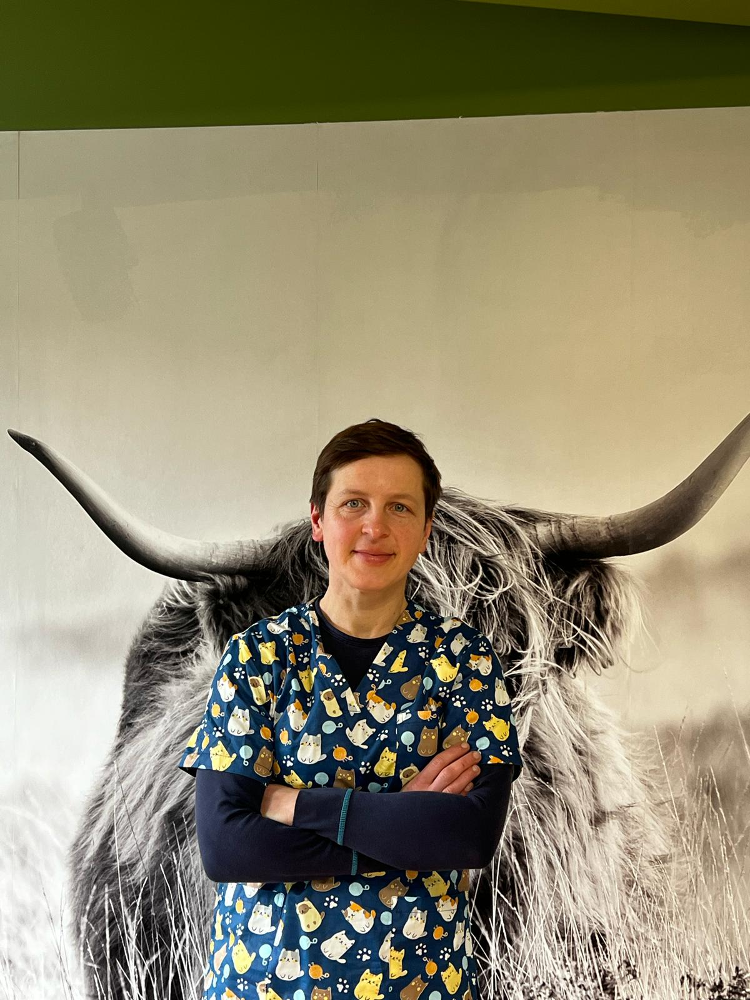

Lek. wet. Natalia Mitkowska
Absolwentka Uniwersytetu Warmińsko - Mazurskiego w Olsztynie w 2010r
Absolwentka Studiów Specjalizacyjnych - Choroby Przeżuwaczy w 2019r
Zwierzęta w moim domu rodzinnym były od zawsze. Od najmłodszych lat czas wolny spędzałam na wsi u "Przybranych Dziadków" jeżdżąc konno i przyglądając się jak wygląda praca przy dużych zwierzętach.
W okresie studiów praktykowałam leczenie koni pod okiem doświadczonych lekarzy w terenie i klinice. Po ukończeniu studiów staż odbyłam i pracowałam w lecznicach dla dużych zwierząt, po czym po roku z mężem otworzyłam swój własny Gabiet Weterynaryjny Natalia i Piotr Mitkowscy.
Czas wolny spędzam jeżdżąc konno oraz uprawiając wrotkarstwo szybkie. Zwieńczeniem moich treningów i ciężkiej pracy było zdobycie w 2023r. tytułu MISTRZA POLSKI w maratonie we wrotkarstwie szybkim.
Tech. wet. Piotr Mitkowski
Wykształcenie: Technik Weteynarii po ukończeniu Technikum Weterynarii w Bydgoszczy w 2012r.
Po skończeniu kurs inseminacji w Olecku ze SHiUZu podjąłem pracę jako inseminator, a rok później w 2011 roku wspólnie z żoną otworzylismy Gabinet Weterynaryny Natalia i Piotr Mitkowscy.
Od lat współpracujemy z Powiatowym Inspektoratem w Bydgoszczy, zajmując się badaniem i monitoringiem chorób zwierząt gospodarskich.
Od lat pasjonuję się hodowlą koni i jeździectwem.